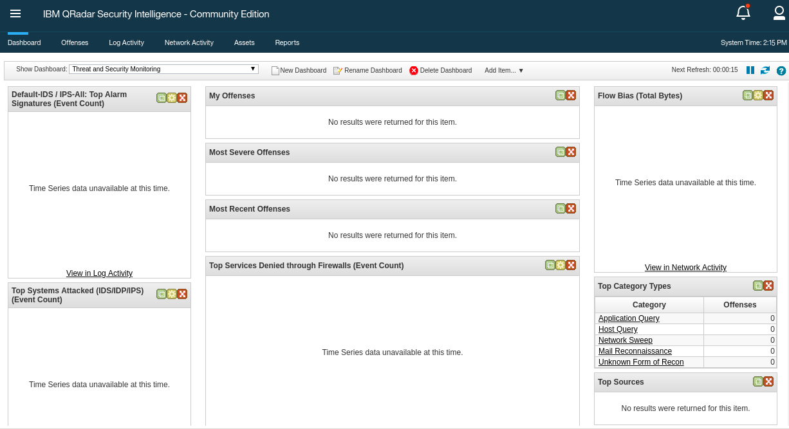
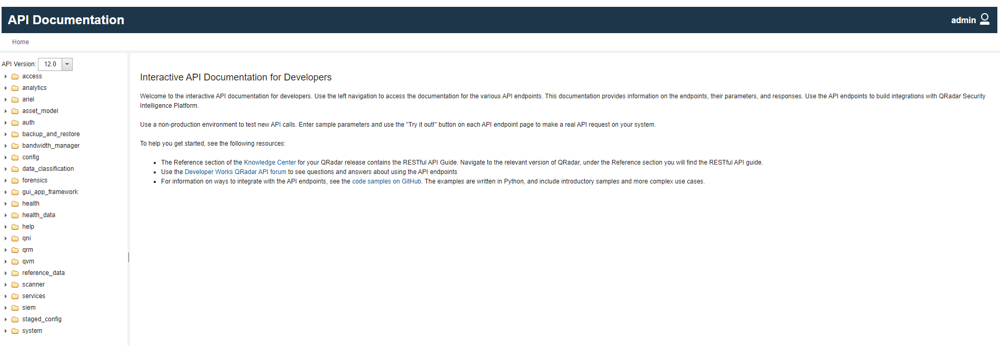
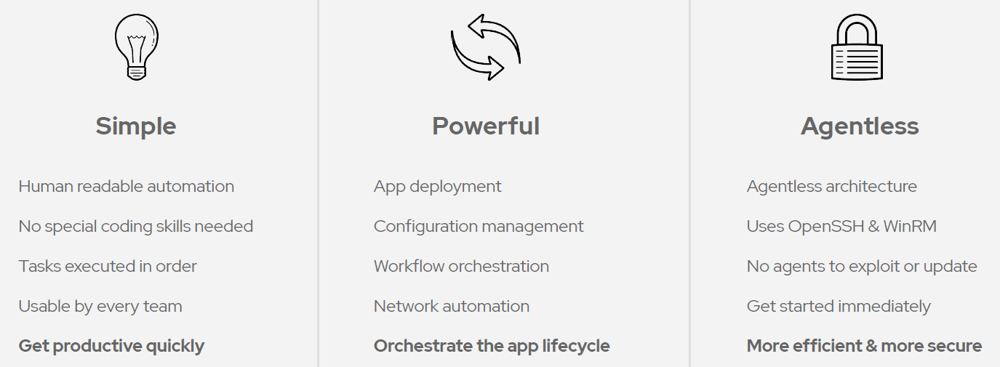
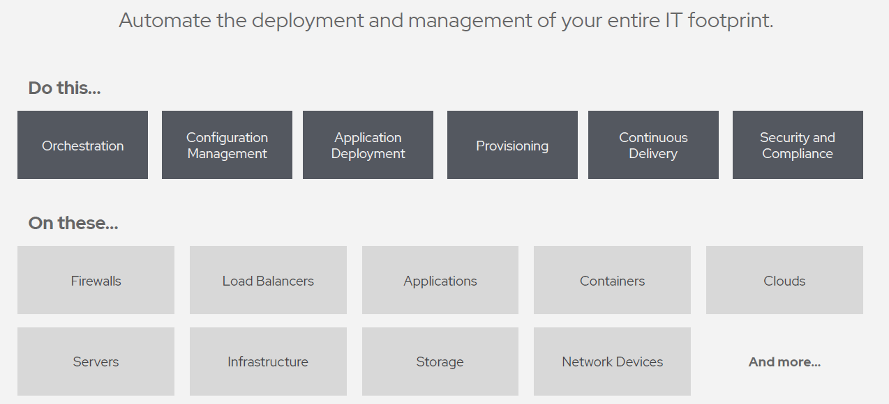

Exercise 1.2 - Introduction to IBM QRadar and Ansible Automation
Objectives
The objective of this part is to introduce you to the use of IBM QRadar and Ansible Automation. We will give you access to a workshop environment for these toools. But optionally, we provide instructions on how to provision your own environment.
Getting Started with QRadar
QRadar is offered on the Cloud, and on Premises. Both options are available as trials.
In this workshop, we are going to provision a QRadar environment for you. But if you want to install your own version, follow these instructions.
Download and InstallQRadar Community Edition is packaged as an OVA, making it easier to get up and running with QRadar on your virtualization platform of choice. The OVA file is easily downloaded and requires minimal configuration to get QRadar up and running.
- Read the documentation
- How to install QRadar CE using a VM
- How to install QRadar CE from ISO boot iamage
To showcase how to automate a SIEM in a security environment, this lab contains a IBM QRadar SIEM, community edition. The SIEM can be accessed via web UI and via REST API.
Once installed, or using this Lab's instructions on the next exercises, you can access the console at http://[your_qradar_ip]/console
Just point your web browser towards https://<qradar-IP>, where
<qradar-IP> is the IP address for the qradar entry in your siem section
of your inventory. Next you will be faced with a warning that the certificate is unsecure since it is self-signed. Please accept this and
proceed.
In the login field, provide the username admin and the password Ansible1! if not provided otherwise. Press the Login button.
You are now viewing the IBM QRadar main web interface.

To get an idea of QRadar and the basic concepts, let’s have a short look at the interface: in the upper part there is a navigation bar with multiple entry points into the main parts of QRadar.
- Dashboard, providing a central overview
- Offenses, messages or events generated by a monitored condition
- Log Activity, showing collected events from log sources
- Network Activity, network traffic communication between certain hosts
- Assets, automatically created profiles of network devices and hosts in your environment
- Reports, customized or standard reports to, well, report what happens in your environment
A great part of automating QRadar remediation using Ansible, is with the use of the QRadar API. To acess it, you need have an IBM ID and access to the IBM X-Force Exchange. Such access is provided in the Lab, but if you want to set yor own environment, chec out this link for the IBM X-Force Exchange API Documentation

After you are properly setup, yo can access the API documentation at http://[your_qradar_ip]/api_doc
Ansible Introduction
Automation requires an investment in time, technology, and people. But it does not have to be expensive or time consuming. You can make the most of your investment with a choice of an open source, or an enterprise automation platform that delivers agility and flexibility. Solve problems once. Scale automation with control and insight. Collaborate across teams. Manage policy enforcement and governance. Bring the power of automation to your whole organization. And most of all, remediate security incodents when used with SIEM products
Why Ansible?Ansible is not the only automation tool available these days. There are other competitors and alternative like Helm, Microsoft Endpoint Manager (Microsoft Intune + SCCM), Jenkins, Microsoft System Center, Terraform, Tanium, IBM UrbanCode Deploy, Vagrant and man others. But our choice is Ansible, for these main reasons:
 What can I do using Ansible?Ansible can automate many tasks. In our case, we are interested in automating security remedion tasks.
In this workshop, we are going to provision an Ansible environment for you. But if you want to install your own version, follow these instructions.
Download and InstallAnsible is an agentless automation tool that you install on a control node. From the control node, Ansible manages machines and other devices remotely (by default, over the SSH protocol). To install Ansible for use at the command line, simply install the Ansible package on one machine (which could easily be a laptop). You do not need to install a database or run any daemons. Ansible can manage an entire fleet of remote machines from that one control node.
Access AnsibleOnce installed, or using this Lab's instructions on the next exercises, you can access Ansible
You are done with the exercise. You can now turn back to the list of exercises or continue with the next exercise, that is 1.3